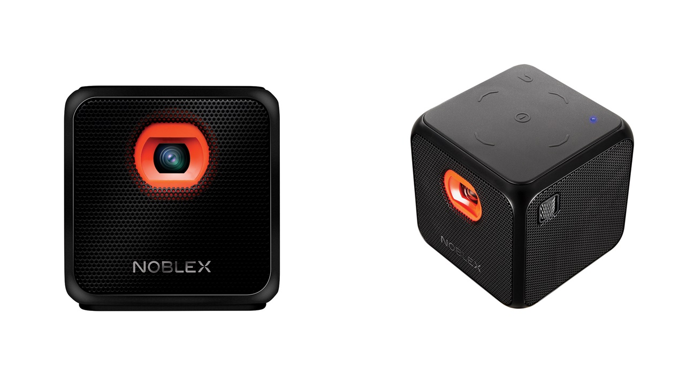
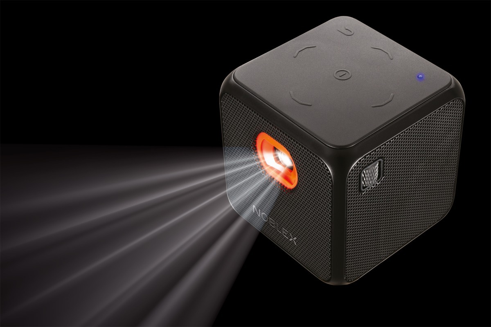

El artículo tecnológico más eficiente

Proyector con plataforma Smart propia, para descargar el contenido que necesites,
llevarlo a donde quieras y disfrutar de la comodidad de ver TV y películas en donde más te guste.
Proyector de 50 ANSI LUMENS, resolución de 854 x480 px, hasta 100", compatible
WiFi/USB y con una autonomía de 150 minutos.

Especificaciones
- Sistema Operativo ANDROID 7.1
- CPU: Rockchip 3128 ARM Cortex-A7, Quad Core, 1.3GHz CPU
- ROM: 1GB DDR3
- RAM: 8GB EMMC
- Vida útil lámpara: 20000 horas
- Potencia de parlantes: 2W (x1)
- Autonomía de Batería: 150 minutos
- Lámpara: RGB LED
- Brillo 50 ANSI LUMENS
- Resolución: FWVGA (854*480)
- Contraste: 1000:1
- Relación de aspecto: 16:9
- Pulgadas de proyección: 10 a 120
- Tamaño recomendado: 60"
- Tecnología de Proyección DLP 0.3" EM DMD
- WI-FI: Si
- Bluetooth: 4.1
- Micro USB: Micro USB(Charging)*1 + USB HOST(TYPE-A)*1
- Salida para auriculares: 3.5mm 3 pole 16O/32O headphones
- NETFLIX: Si
- YouTube: Si
- Google Play Store: Si
- Airplay: Si
- Miracast: Si
- DLNA: Si
- Espejado por cable: Si
- Formatos de imagen: JPEG, BMP, PNG, GIF
- Formatos de audio: MP3, WAV, OGG, FLAC, APE
- Formatos de video: WMV, MPEG1/2/4, H.264, H.265, MOV ,VC1, DIVX
- Formatos de trabajo: Word, Excel, PDF, PowerPoint
- Conexión Mouse USB: Si
- Conexión Teclado USB: Si
- Control Remoto Bluetooth: Si
- Manual: Si
- Adaptador de Alimentación: Si
- Trípode: Si
- Funda: Si
- Medidas Proyector: 62x62x64mm
Datos
Noblex presentó Smart Qube, un proyector portátil que permite reproducir películas, series,
mostrar presentaciones de negocios y hasta escuchar música con solo utilizar el control remoto.
El distintivo más importante del proyector Smart Qube de Noblex es la posibilidad de proyectar
aplicaciones. La compañía destacó entre ellas Netflix y YouTube. Es decir, se comportaría de manera
similar a Chromecast, el accesorio de Google que permite enviar contenidos a cualquier TV con HDMI.
El Smart Qube de Noblex proyecta imágenes hasta en100’’. Cuenta con un contraste dinámico de 1000:1
y 50 ANSI Lúmenes de brillo.
Además de tener Wi-Fi para recibir los contenidos, el Smart Qube cuenta con Bluetooth para conectar
una barra de sonido o auriculares. Posee una memoria interna de 1 GB y conector USB para dar soporte
a cualquier formato multimedia.